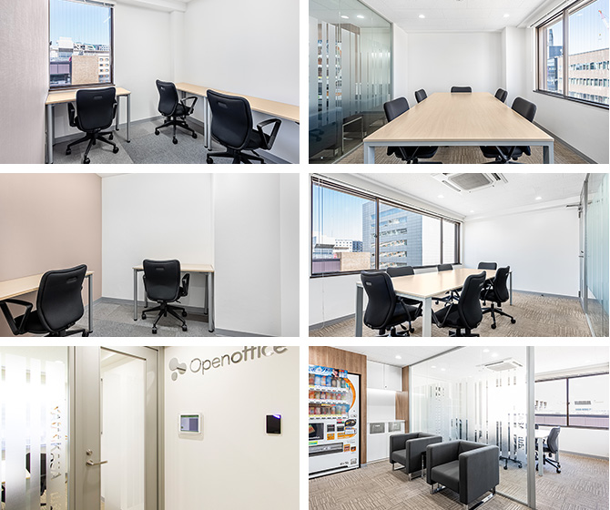

【個室レンタルオフィス】
オープンオフィス博多駅前通り
オープンオフィス博多駅前通りがNEW OPEN
博多駅5分 福岡空港15分の好立地！ 大手企業が集まるビジネス街「はかた駅前通り」に月額2万円～
博多のメインストリート「はかた駅前通り」沿い、博多駅博多口から徒歩5分、福岡空港からも15分程度という非常に便利なロケーション。
周辺での大型再開発で注目が集まるビジネスアエリア。士業の方は勿論、支店・営業所、ITベンチャー企業に最適な環境です。
オープンオフィス博多駅前通りが提供するオフィスサービス
-
 高速インターネット＜光ファイバー＞
高速インターネット＜光ファイバー＞
- 100Mbpsの光ファイバーによるブロードバンド環境をご用意しました。各部屋に配線済みですので、パソコンに繋げばすぐLAN経由で高速インターネットを利用出来ます。
-
 ネットワーク・カラーレーザープリンタ+スキャナー
ネットワーク・カラーレーザープリンタ+スキャナー
- ネットワークを利用して、各お部屋のパソコンから印刷できます。プリンタをご用意いただく必要もございません。
スキャナー機能も搭載しております。
-
 カラーレーザーコピー
カラーレーザーコピー
- フロア内にご用意してあります。カード方式でコピーが出来ますので、小銭の準備が不要です。
-
 ICカードキーによる入室管理
ICカードキーによる入室管理
- 専用ICカードを使ったホテル式のスマートシステムを用いて、セキュリティーを向上させています。
-
 ミーティングルーム（会議室）
ミーティングルーム（会議室）
- 商談・会議にご利用いただける共有スペースをご用意しています。インターネットで簡単に予約をしていただけます。
-
 無線LAN（WiFi）
無線LAN（WiFi）
- 共有スペースとミーティングスペースにて、無線LAN(WiFi)サービスをご利用いただけます。

オープンオフィス博多駅前通りの特徴

はかた駅前通りのビジネスエリア
博多駅から徒歩5分、福岡空港から15分程度の好アクセス
注目集まる、周辺での再開発、大手企業の進出
博多駅から一直線。説明のし易いロケーション
24時間入退館可能
オフィス周辺のMap
オープンオフィス博多駅前通り近隣のスポット
- ■銀行
- 西日本シティ銀行
三井住友銀行
福岡銀行
シティバンク 福岡支店 - ■レストラン
- 寿司 河庄
はかた い津み
ラ・ロシェル福岡 - ■ホテル
- グランドハイアット福岡
ANAクラウンプラザホテル福岡
ホテル日航福岡 - ■サービスアパートメント
- アートアンドテック博多
福岡アパートメンツ株式会社 - ■映画館
- ユナイテッド・シネマキャナルシティ13
T・ジョイ博多 - ■余暇施設
- キャナルシティ博多 中洲
福岡アジア美術館 楽水園
オープンオフィス博多駅前通りの住所・アクセス
- 住所:
- 福岡市博多区博多駅前3-27-25 第二岡部ビル 8F/9F
- 空港からのアクセス:
- 福岡空港国内線第2ターミナルビル地下にある地下鉄空港線「地下鉄福岡空港駅」より2駅目の「博多駅」下車
- 電車からのアクセス:
- JR、新幹線、地下鉄「博多駅」博多口より徒歩5分
- お車でのアクセス:
- 「博多駅」より、はかた駅前通りを進み、「博多区役所南口」交差点手前
オープンオフィス博多駅前通りのフロアマップ

※フロア内は禁煙です。
※こちらはイメージ図となりますので、状況が異なる場合は現況を優先させていただきます。
- ◆初回納入金
- 利用料1ヶ月分の保証金
- ◆共益費
- 水道光熱費、ビル共益費、ゴミ出し、フロア・トイレの清掃、共有部分の消耗品代を含みます。
リージャスグループの説明
リージャス・グループは、柔軟なワークスペースを提供する世界最大の企業です。そのネットワークは世界120カ国1,100都市、3300拠点に及びます。会員数は250万人で、業界で成功を収める大小様々な企業や起業家の方々にご利用いただいています。
リージャスは、個室タイプのレンタルオフィス、コワーキングスペースなど多彩なオフィスプラン、近年需要が高まるモバイルワークやバーチャルオフィス、障害復旧サービスの提供を通じ、お客様が予算やワークスタイルに合わせて仕事を行うことができる環境を提供いたします。